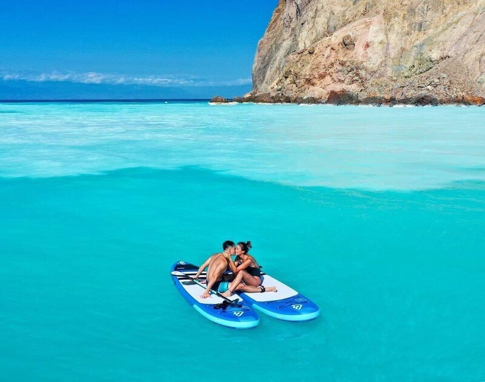

<!DOCTYPE html>
<html lang="en">
<head>
    <meta charset="UTF-8">
    <meta name="viewport" content="width=device-width, initial-scale=1.0">
    <title>Document</title>
</head>
<body>
    
</body>
</html>
<body>

</body>
</html>
<head>
    <style>
        .a img{

        }
        .b{

        }
         div{
            background-image: 
            url(屏東「國立海洋生物博物館」.jpeg),
            url(宜蘭「龜山島牛奶海」.jpeg),
            url(嘉義「梅山太平雲梯」.jpeg);
            background-size: 60px,50px;
            background-repeat: space,repeat;
        }
        </style>
         </head>
        <body>
            <div class="a">
                
                
                
            </div>
            <div class="b"></div>
        </body>
        </html>
        <html lang="en">
           <head>
            <meta content="UTF-8">
            <meta name="viewport" content="width=device-width">
            <title>背景圖重疊</title>
            <style>
                div{
                    width: 200px;
                    height: 150px;
                    border: 1px solid #000;
                    margin: 10px;
                    overflow: hidden;
                    position: relative;
                }
                .a img{
                    position: absolute;
                    width: 120px;
                }
                .b{
                    background-image: 
                    url(屏東「國立海洋生物博物館」.jpeg),
                    url(宜蘭「龜山島牛奶海」.jpeg),
                    url(嘉義「梅山太平雲梯」.jpeg);
                   background-size: 60px,50px;
                  background-repeat: space,round;            
                }
            </style>
           </head> 
           <p style="color: rgb(0, 0, 0);">屏東「國立海洋生物博物館宜蘭」「龜山島牛奶海」嘉義「梅山太平雲梯」
            <p style="color: rgb(255, 153, 0);">不讓XPARK專美於前！全台灣規模最大的屏東海生館同樣吸引許多遊客前往，擁有豐富魚種、小白鯨、企鵝、魟魚、能觀察珊瑚礁的海底隧道，也有「夜宿海生館」活動能伴隨著海洋環境入夢鄉！2019年更引進10公尺高梨行囊巨藻，立刻洗版IG成為超夯打卡點，值得去親眼見證！</p>
            <p style="color: rgb(0, 162, 255);">2020年夏天，相信你也被「龜山島牛奶海」燒到心動不已！有著乳藍色的夢幻色調，從搭著帆船出航，或是划行立槳SUP拍下浪漫性感或放閃照，或用空拍機捕捉與閨蜜好友們的留念照，成就一幅幅2020年夏日最美風景！</p>
             <p style="color: rgb(0, 4, 255);">身為全台最高海拔觀景吊橋的「梅山太平雲梯」，木棧板的橋面配上高山的雲霧環繞，每張都是仙女下凡認證照！在雲梯上還能欣賞到從雲嘉南平原延伸到台灣海峽的遼闊景致，橋面中段更有刺激的「鏤空鐵架」設計，拍完美照後，記得要來挑戰膽量、體驗腎上腺素飆升的快感。</p>
        </head>        
        </html>

       
        


